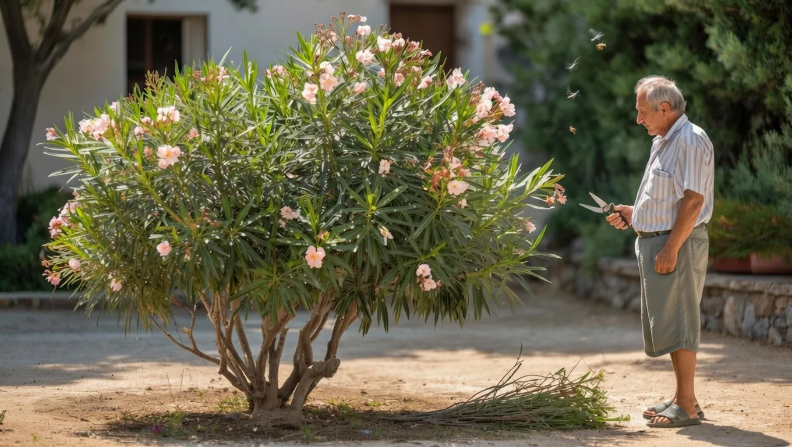

Why Mediterranean Gardeners Never Prune Oleanders Like We Do


In the scorching summer months, oleanders thrive in Mediterranean gardens, their vibrant flowers a staple of the region's landscapes. But as the seasons change, gardeners must decide how to prune these resilient plants to ensure their continued health and beauty.
The timing and technique of pruning oleanders are critical, as improper pruning can damage the plant or even lead to its demise. This is why Mediterranean gardeners' unique approach to pruning oleanders has garnered attention, particularly among gardening enthusiasts looking to adopt more effective and sustainable practices.
Table of Contents
What Happened — The Full Story
In Mediterranean regions, oleanders have been a part of the landscape for centuries, with gardeners developing distinct methods for pruning and caring for these plants. Unlike common practices in other parts of the world, where oleanders are often heavily pruned to maintain a specific shape or size, Mediterranean gardeners take a more nuanced approach. They prune oleanders with the aim of promoting healthy growth and encouraging the plant's natural flowering cycle.
This approach is rooted in a deep understanding of the oleander's growth patterns and the regional climate. By pruning oleanders in a way that respects their natural development, Mediterranean gardeners are able to maintain the plant's beauty while also ensuring its resilience in the face of drought and extreme temperatures.
The contrast between Mediterranean pruning techniques and those used in other regions highlights the importance of considering the specific needs and characteristics of the oleander plant. Rather than applying a one-size-fits-all approach to pruning, gardeners can learn from the methods used in Mediterranean gardens to develop more effective and sustainable practices.
The Background You Need to Know
Oleanders are highly adaptable plants, capable of thriving in a wide range of environments. However, their ability to flourish is closely tied to the quality of care they receive, particularly when it comes to pruning. In regions where oleanders are commonly found, gardeners must balance the need to control the plant's size and shape with the risk of damaging its delicate flowering cycle.
But that's not the full picture. The unique characteristics of the Mediterranean climate, including its hot summers and mild winters, have led to the development of specialized pruning techniques. These techniques take into account the oleander's growth patterns, as well as the regional climate, to create a pruning strategy that promotes healthy growth and flowering.
Here's what changed: as gardeners began to share their knowledge and experiences, a distinct approach to pruning oleanders emerged. This approach prioritizes the plant's natural development, rather than imposing a predetermined shape or size. The result is a more sustainable and effective method for caring for oleanders, one that can be applied in a variety of contexts.
Also Read
More Tech stories →Key Details and What They Mean
So, what does this mean for gardeners looking to adopt Mediterranean pruning techniques? The key is to understand the oleander's growth patterns and to prune the plant in a way that respects its natural development. This may involve pruning the plant less frequently, or using specialized techniques to encourage healthy growth and flowering.
Some key points to consider include:
- Pruning oleanders during the dormant season, when the plant is less stressed and more able to recover from pruning.
- Using sharp, clean pruning tools to minimize the risk of damage or infection.
- Removing dead or damaged branches to promote healthy growth and prevent the spread of disease.
The numbers say otherwise: while it may be tempting to prune oleanders heavily to maintain a specific shape or size, this approach can ultimately damage the plant and reduce its ability to flower. By adopting a more nuanced approach to pruning, gardeners can promote healthy growth and encourage the oleander's natural flowering cycle.
Key Takeaways
- Mediterranean gardeners' approach to pruning oleanders prioritizes the plant's natural development and promotes healthy growth and flowering.
- Pruning techniques should take into account the oleander's growth patterns and the regional climate.
- Adopting a more nuanced approach to pruning can help gardeners promote sustainable and effective care for their oleanders.
Frequently Asked Questions
What is the best time to prune oleanders?
The best time to prune oleanders is during the dormant season, when the plant is less stressed and more able to recover from pruning. This typically occurs in late winter or early spring, although the exact timing may vary depending on the regional climate.
How often should I prune my oleanders?
The frequency of pruning will depend on the specific needs of the plant and the desired level of maintenance. In general, oleanders require less frequent pruning than other plants, as they are able to maintain their shape and size with minimal intervention.
Can I prune my oleanders to maintain a specific shape or size?
While it is possible to prune oleanders to maintain a specific shape or size, this approach can ultimately damage the plant and reduce its ability to flower. A more nuanced approach to pruning, one that prioritizes the plant's natural development, is generally recommended.
What are the risks of improper pruning?
Improper pruning can damage the oleander plant, reducing its ability to flower and making it more susceptible to disease. It is essential to use sharp, clean pruning tools and to prune the plant during the dormant season to minimize the risk of damage or infection.
Conclusion
The approach to pruning oleanders used by Mediterranean gardeners offers a valuable lesson for gardeners everywhere. By prioritizing the plant's natural development and promoting healthy growth and flowering, gardeners can create a more sustainable and effective approach to caring for their oleanders. This approach is not limited to the Mediterranean region, but can be applied in a variety of contexts to promote the health and beauty of these resilient plants.
As gardeners continue to seek out new and innovative approaches to pruning and plant care, the methods used by Mediterranean gardeners are likely to gain increasing attention. By adopting a more nuanced approach to pruning, one that respects the oleander's natural development and promotes healthy growth and flowering, gardeners can create a more beautiful and sustainable landscape. Readers should watch for further developments in this area, as new research and techniques become available to help gardeners promote the health and beauty of their oleanders.
Sarah Mitchell
Senior Tech Editor
Tech journalist with 8+ years of experience covering the latest in smartphones, EVs, AI, and consumer electronics. Bringing you accurate, well-researched stories from the world of technology.
Leave a Comment